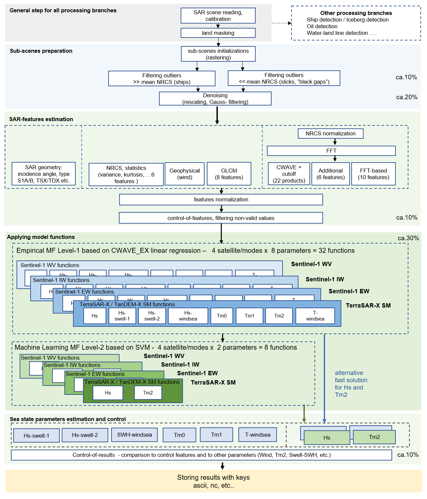
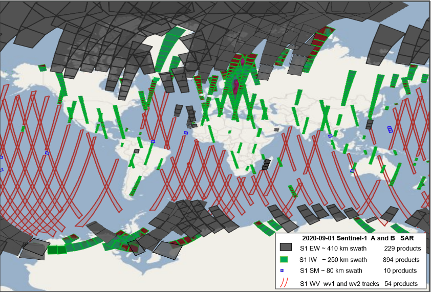
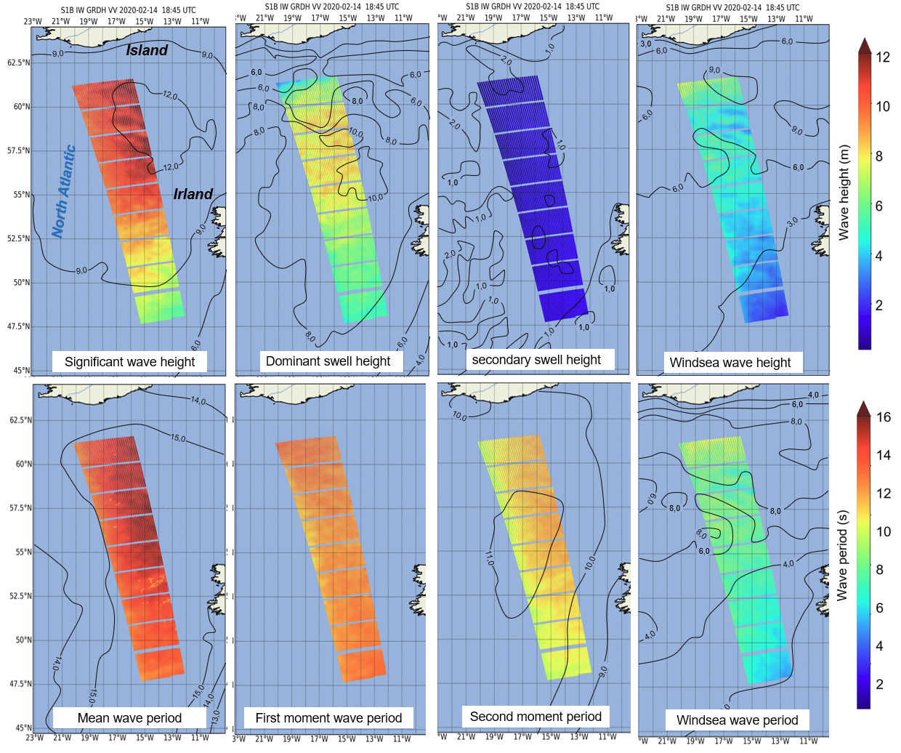
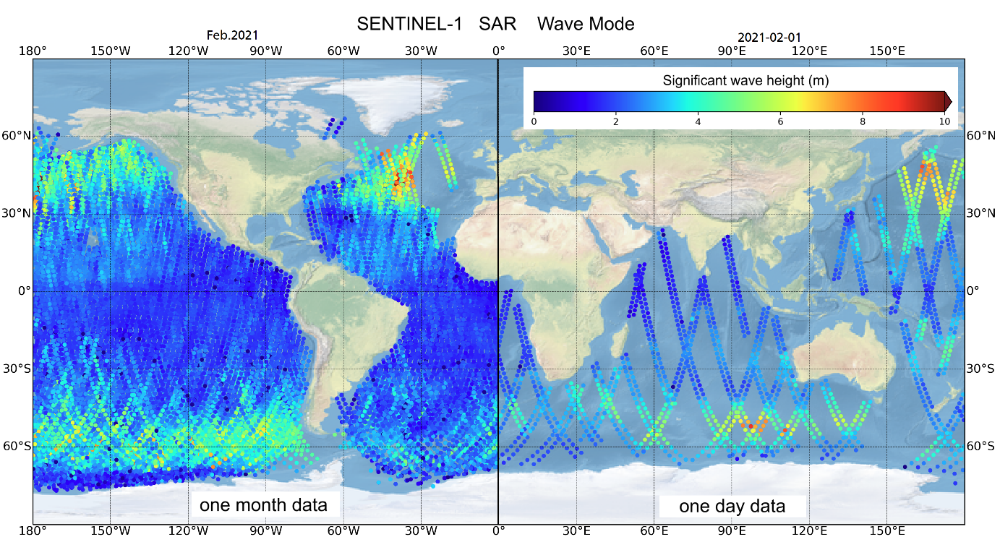
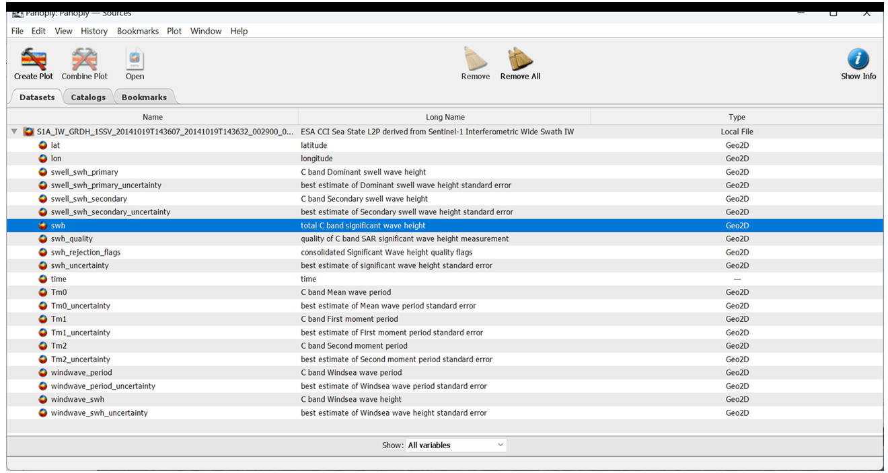
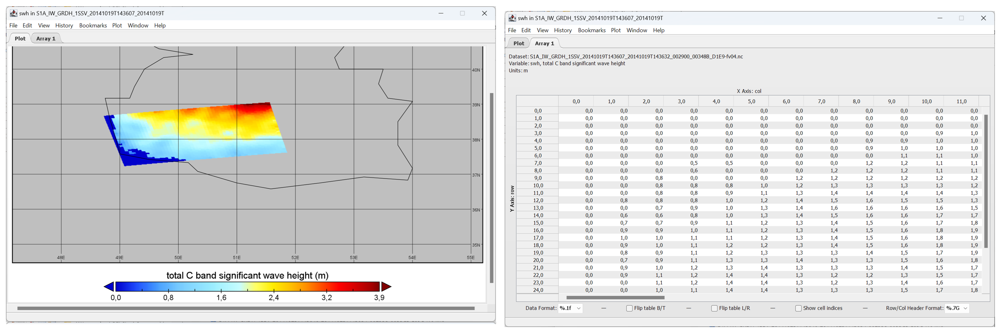

5.5. SAR processing details#
5.5.1. Processing with SAR-SeaStaR algorithm using Sea State Processor (SSP)#
This section describes in details the processing workflow for the SAR Sea State Processor (SSP) based on SAR-SeaStaR (SAR Sea State Retrival) algorithm used for processing the data in CCI Sea State version 4. The SSP is part of the SAR AIS Integrated Toolbox (SAINT), developed at the DLR Maritime Safety and Security Lab Bremen. It is provided as a container, enabling easy integration into the PSM (Processing System Management, which provides a systematic process flow and controls for Level-2). Subscription rules allow user requests to be directly linked to on-demand ground station planning and L2 processing.
The SAR-SeaStaR is optimised for minimizing the percenatge of the non-valid data. For example, the number of non-valid ocean imagettes for S1 WV is ca. 1.5% with an accuracy of ca. 0.26 m in terms of SWH. This optimization allows processing data for ambiguous enviroment conditions dominate in coastal ares (NRCS artifacts by ships, buoys, watermarks, windparks, etc.) and by low winds under 2 m/s.

Fig. 5.5 SAR-SeaStaR algorithm workflow realized in Sea State Processor as a part of SAR AIS Integrated Toolbox (SAINT) package for processing meteo-marine information, targets and processes at sea surface from SAR imagery. The current version of the algorithm includes 32 CWAVE_EX model functions (4 satellite/modes, 8 sea state parameters) and 8 SVM ML functions (4 satellite/modes Hs and Tm2). For each processing operation, the approximate effects in percent on resulting RMSE in terms of wave height are shown on the right; for the model functions, this is compared to CWAVE method.#
The processing includes the complete processing chain with a series of steps needed to reach high accuracy:
Filtering of the image artefacts (e.g. ships, wakes, offshore windfarms constructions, etc.).
Resampling and denoising (e.g. for S1 IW resampling from 10 m to 2.5 m pixel spacing).
SAR features estimation and control-of- features.
Model functions (linear regression and machine learning models) for estimation of sea state parameters.
Control-of-results using filtering procedures.
5.5.2. SAR input data for processed by SAR-SeaStaR (DLR)#
Sentinel-1 SAR three modes:
S1- Interferometric Wide Swath Mode (IW) GRD (Ground Range Detected) L1 products
S1- Extra Wide (EW) GRD L1 products.
S1- wave mode (WV) SAR Single Look Complex (SLC) L1 products.
The VV or HH polarization data were used, with priority to VV products for S1 IW and S1 EW.
Name |
ca. coverage |
pixel spacing |
GB per SAR L1 original ID product |
N worldwide/ocean scenes per day (S1A+S1B in 2020) |
|---|---|---|---|---|
S1 IW / GRD |
ca. 250×200 km |
10 m |
ca. 3 GB |
ca. 900 / 500 |
S1 EW / GRD |
ca- 400×350 km |
40 m |
ca. 0.6 GB |
ca. 260 / 200 |
S1 WV / SLC |
ca. 20×20 km each 100 km along-track imagettes |
ca. 3.5 m |
ca. 5 GB |
ca. 50 ID-products each with ca. 80–120 imagettes (min – ca. 2 GB max.- 16 GB) |

Fig. 5.6 An example of S1 worldwide acquisitions on 2020-09-01. There are 54 S1 WV tracks (red), 894 S1 IW images (green), 229 S1 EW images (grey).#
5.5.3. Processing and resolution of derived sea state parameters#
S1 WV (wave mode) acquires two parallel tracks with incidence angles of around 23° (wv1) and around 36° (wv2) with imagettes (small images with an approximate footprint of 20×20 km, acquired every 200 km along each wv1 and wv2 track with a 100 km offset and distance of 100 km between wv1 and wv2 tracks. Using both wv1 and wv2 this means along-track imagettes each 100 km. The length of a track (relative orbit with ID) varies from around 1,000 km (10 imagettes) to 12,000 km (120 imagettes). The nominal spatial pixel resolution of S1 WV is around 3 m depending on the local incidence angle in SLC L1 products. The scenes can be acquired in vertical (VV) or horizontal (HH) co-polarization. However, more than 95% of the data were acquired in VV polarization. Each day, around 60 S1 WV products (ascending or descending tracks) each with around 120 individual imagettes for both S1-A and S1-B are acquired. Each individual S1 WV L1 SLC product has 2–10 GB (ca. 5 TB/month).
S1 IW mode combines a large swath width with a moderate geometric resolution (ESA, S1-IW). The individual IW images cover approximately 200 km in azimuth and 250 km in the range direction with a pixel spacing of 10 m. The original GRDH (Ground Range Detected High resolution) L1 products are available in single (HH or VV) or dual polarization (HH+HV or VV+VH). For sea state estimation, the VV or HH polarization data were used, with priority given to VV products.
S1 EW (Extra Wide) mode is similar to the IW mode, but the EW mode acquires data over a wider area than for IW mode using five sub-swaths. The EW mode acquires data over 400 km swath width with a coarser pixel spacing of 40 m (GRDM), and 25 m (GRDH).
For CCI, the sea state parameters were processed (the processing raster S1 IW and S1 EW can be chaged):
S1 WV: averaged values for an along-track imagette 20x20km each 100 km,
S1 IW: 5 km raster (ca. 1500 values/image)
S1 EW: 17.5 km raster (ca. 450 values/image)
References
Pleskachevsky, A., Tings, B., S. Wiehle, S., Imber, J., Jacobsen, S., 2022. Multiparametric sea state fields from synthetic aperture radar for maritime situational awareness. Remote Sens. Environ., vol. 280, Oct. 2022, Art. no. 113200.
5.5.4. Editing#
At first, all available archive scenes were processed. Later only scenes with at least 2 km water area were designated as ocean scenes and included in the DLR sea state products (DLR_OCN). The WVs are only recorded over oceans, while only ca. 40% of all IW and ca. 80% of all EW scenes include the seas. The processed results has two level of data rejection:
landmasking (rejection_flag=16 for not_water (land))
due to series of control procedures (rejection_flag=4=invalid value) Additional, the flags point out the sea state parametr is correct, but due to enviroment, the value can have a lower accuracy (rejection_flag=8 for wind below 2 m/s)
5.5.5. Ancillary data#
Ancillary data (Land masks)
SRTM - Shuttle Radar Topography Mission (SRTM) -60°<LAT<60°.
GSHHG - Global Self-consistent, Hierarchical, High-resolution Geography Database.
Model data (training/validations)
Météo-France WAve Model (MFWAM) with a spatial resolution of 1/5° degrees. Global Ocean Waves Reanalysis (https://data.marine.copernicus.eu/product/GLOBAL_MULTIYEAR_WAV_001_032/description) past sea states since years 1980.
WaveWatch-3 (WW3) model of National Oceanic and Atmospheric Administration (NOAA, https://polar.ncep.noaa.gov/waves/(https://polar.ncep.noaa.gov/waves/)) with a spatial resolution of 1/2 degrees (spatially interpolated for collocation) for collocations before 2016.
5.5.6. DLR Algorithm SAR-SeaStaR#
The empirical algorithm SAR-SeaStaR (SAR Sea State Retrieval) is developed at German Aerospace Center DLR, Maritime Safety and Security Lab Bremen. From SAR data, SAR-SeaStaR estimates a series of integrated sea state parameters:
total significant wave height SWH
wave heights of dominant and secondary swells and windsea,
mean, first and second moment wave periods, and windsea period.
SAR scenes are processed in raster format, the output are fields for each parameter showing their spatial distribution.
SAR-SeaStaR is adopted for different satellites Sentinel-1 (S1) and TerraSAR-X (TS-X) and modes (state-of-the-art 2024):
S1 Wave Mode (WV) Level-1 (L1) products SLC
S1 Interferometric Wide Swath Mode (IW) GRDH
S1 Extra Wide (EW) GRDM and GRDH
TerraSAR-X (TS-X) StripMap (SM) GRD RE
SAR-SeaStaR is based on combination of the linear regression function CWAVE_EX (Pleskachevsky et al., 2022) and a machine learning approach using the support vector machine (SVM) technique.

Fig. 5.7 DLR SAR-SeaStaR outputs. Example of eight sea state parameter grids retrieved from a S1 IW scene with ca. 1600 km × 200 km coverage acquired during a strong storm in the North Atlantic on 2020-02-14 at 18:45 UTC with SWH reaching ca. 13 m. Processing in a 5 km raster results in ca. 1500 subscenes (approximately ~30×50) for each individual IW image. Isolines shows the results of forecast WFWAM at 18:00 UTC (excluding first moment not provided by Copernicus Marine Environment CMEMS).#

Fig. 5.8 Example of Sentinel-1 WV archive processing. In the right half of the figure only one-day of acquisitions is displayed on the globe, on the left half all data acquired during February 2021 is displayed.#
The SAR-SeaStaR algorithm includes the complete processing chain with a series of steps needed to reach high accuracy:
Filtering of the image artefacts (e.g. ships, wakes, offshore windfarms constructions, etc.).
Resampling and denoising (e.g. for S1 IW resampling from 10 m to 2.5 m pixel spacing).
SAR features estimation and control-of-features.
Model functions (linear regression and machine learning models) for estimation of sea state parameters.
Control-of-results using filtering procedures.
The SAR-SeaStaR estimation of sea state parameters is based on an analysis of the normalized radar cross-section (NRCS) of a subscene. A series of subscenes are initialized in a raster format and their analysis results in a continuous grid for series of integrated sea state parameters. The grid’s raster step is the distance between the centre points of analysed subscenes. One of the basic variables represents the SAR image spectrum obtained using fast Fourier transformation (FFT) applied to radiometrically calibrated, filtered, denoised, land-masked and normalised subscenes with a size of 1024×1024 pixels in wave number domain.
Linear regression. The empirical linear regression CWAVE_EX (extended CWAVE) model function uses primary SAR features estimated directly from the subscenes and secondary features. Secondary features are combinations of primary features in quadratic and inverse form. In total, 54 primary and the 77 most significant secondary features are applied in CWAVE_EX. Normalization of features using mean (MEAN) and standard deviation (STD) for each feature was found to be optimal. The primary features are of five different types:
NRCS and NRCS statistics (variance, skewness, kurtosis, etc.), in total 9 features.
Geophysical parameters (surface wind speed estimated from analysed subscene using CMOD‑5N algorithms for C-band and XMOD‑2 for X-Band), 1 feature.
Grey Level Co-occurrence Matrix (GLCM) parameters (homogeneity, dissimilarity, etc.), in total 8 features.
Spectral parameters based on image spectrum integration for different wavelength domains (0-30 m, 30-100 m, 100-400 m, etc.) and spectral width parameters (Longuet-Higgins, Goda), in total 17 features.
Spectral parameters using products of normalized image spectrum with orthonormal functions (CWAVE approach) and cutoff wavelength estimated using autocorrelation function (ACF), in total 21 features.
Note, sea state is estimated form prefiltered subscenes, where the NRCS of outliers (ships, wakes, oil, etc.) and noise are essentially removed.
Machine learning. The SVM technique was applied to SAR-SeaStaR with nu-SVR Support Vector Regression (ν-SVR) with a radial basis function as kernel type. For practical applications, the high-performance ThunderSVM (TSVM) library was applied. TSVM runs an order of magnitude faster than the standard LibSVM and allows training of large datasets. The input for the SVM are the primary features complemented with:
first-guess Hs from CWAVE_EX linear regression solution.
precise incidence angle with an accuracy of third decimal place.
flag identifying the satellite (S1-A or S1-B for Sentinel-1).
pixel spacing (different for e.g. EW GRDH (25 m pixel) and GRDM (40 m pixel) products)
flag identifying polarisation (HH or VV).
5.6. SAR: DLR ocean products description#
5.6.1. Uncertanties#
Eight sea state parameters processed by DLR (uncertainties based on Pleskachevsky et al., 2024)
Parameter |
Abb. |
Unit |
RMSE S1 IW |
RMSE S1 EW |
RMSE S1 WV (wv1/wv2) |
|---|---|---|---|---|---|
total significant wave height |
swh |
m |
0.42 |
0.51 |
0.24 / 0.28 |
mean wave period Tm0-1 |
Tm0 |
s |
0.88 |
0.92 |
0.46 / 0.51 |
first moment wave period |
Tm1 |
s |
0.97 |
0.85 |
0.51 / 0.56 |
second moment wave period |
Tm2 |
s |
0.96 |
0.86 |
0.46 / 0.51 |
wave height swell dominant system |
swell_swh_primary |
m |
0.57 |
0.60 |
0.42 / 0.47 |
wave height swell secondary system |
swell_swh_secondary |
m |
0.38 |
0.44 |
0.41 / 0.46 |
significant wave height windsea |
windwave_swh |
m |
0.48 |
0.57 |
0.40 / 0.46 |
mean period windsea |
windwave_period |
s |
0.97 |
0.95 |
0.62 / 0.67 |
The DLR uncertainties in the Tab.DLR.2. are based on comparisons with MFWAM reanalysis with 1/5° and 3h time step (20 min interpolated) performed for S1 archive processed data. The detailed information on comparisons can be found in Pleskachevsky et al., 2024 (https://ieeexplore.ieee.org/document/10584481).
The uncertainties of the results are connected to uncertainties in ground truth data. From global point of view, the in-situ measurements cover very limited areas, mostly in shelf regions. To estimate accuracies of the methods worldwide, only model results are available. However, the comparisons between different wave forecast models shows, the shelf regions and also series of golfs and local seas (e.g. Philippine Sea) and coasts (Aleutian Islands) have stronger uncertainties between different models (RMSE between models are around 0.40 m) in comparison to open ocean regions (RMSE between models are around 0.20 m).
5.7. DLR processed ocean products description (OCN-DLR)#
5.7.1. Processed data amount#
1 ID product |
1 day worldwide |
1 month worldwide |
|---|---|---|
S1 I ca. 0.4 MB |
ca. 500 IDs – ca. 200 MB |
ca. 15000 IDs - ca. 6 GB |
S1 EW ca. 0.2 MB |
ca. 200 IDs – ca. 80 MB |
ca. 6000 IDs - ca. 2.4 GB |
S1 WV ca. 0.1 MB |
ca. 65 IDs – ca. 7 MB |
ca. 2000 IDs - ca. 200 MB |
5.7.2. Individual ID description#
The DLR ocean products (DLR-OP) are stored using original IDs in netCDF format, e.g.:
S1 ID = S1A_IW_GRDH_1SDH_20141006T074120_20141006T074149_002706_00306E_BAE5 DLR-OP = S1A_IW_GRDH_1SDH_20141006T074120_20141006T074149_002706_00306E_BAE5-fv04.nc
The time-stamp (UTC) is stored in file names (2014-10-06 07:41:20 UTC for the given example). The stored data are all 2D arrays:
geo-coordinates (latitude, longitude)
8 integrated sea state parameters (see Tab. “DLR processed ocena parameters and uncertanties”)
quality, and rejection flags (see.Tab “DLR ocean products quality, and rejection flags”)
uncertainties for all 8 parameters
Abb. in netCDF product |
Description in netCDF product |
Meaning |
|
|---|---|---|---|
quality flag |
swh_quality |
quality of C band SAR significant wave height measurement |
0=undefined (e.g. land), 1=bad, 2=acceptable (not used), 3 – good |
rejection flag |
swh_rejection_flags |
consolidated Significant Wave height quality flags |
1=Nv (variance) > max (not more used), 2=swh outlier, 4=invalid value, 8=wind below 2 m/s (not more used), 16=not_water (land) |
uncertainty SWH |
swh_uncertanty |
best estimate of significant wave height standard error |
to MFWAM (CMEMS) estimated for each swh domains 0-1.5 m, 1.5-3m, 3-6m, >6m and interpolated/extrapolated |
uncertainty SW1 |
swell_swh_primary_uncertanty |
Best estimate of dominant swell wave height standard error |
to MFWAM (CMEMS) estimated for each swh domains 0-1.5 m, 1.5-3m, 3-6m, >6m and interpolated/extrapolated |
uncertainty SW2 |
swell_swh_secondary_uncertanty |
Best estimate of secondary swell wave height standard error |
to MFWAM (CMEMS) estimated for each swh domains 0-1.5 m, 1.5-3m, 3-6m, >6m and interpolated/extrapolated |
uncertainty SWW |
windwave_swh_uncertanty |
Best estimate of windsea wave height standard error |
to MFWAM (CMEMS) estimated for each swh domains 0-1.5 m, 1.5-3m, 3-6m, >6m and interpolated/extrapolated |
uncertainty Tm0 |
Tm0_uncertanty |
Best estimate of mean wave period standard error |
to MFWAM (CMEMS) estimated for each swh domains 0-4 s, 4-7 s, 7-10s, >10 s and interpolated/extrapolated |
uncertainty Tm1 |
Tm1_uncertanty |
Best estimate of first moment wave period standard error |
to WW3 estimated for each swh domains 0-4 s, 4-7 s, 7-10s, >10 s and interpolated/extrapolated |
uncertainty Tm2 |
Tm2_uncertanty |
Best estimate of second moment wave period standard error |
to MFWAM (CMEMS) estimated for each swh domains 0-4 s, 4-7 s, 7-10s, >10 s and interpolated/extrapolated |
uncertainty Tmw |
windwave_period_uncertanty |
Best estimate of mean period windsea standard error |
to MFWAM (CMEMS) estimated for each swh domains 0-4 s, 4-7 s, 7-10s, >10 s and interpolated/extrapolated |

Fig. 5.9 Example of DLR ocean product (DLR-OP) for 1 S1 ID (displayed with PANOPLY)#

Fig. 5.10 Example of DLR ocean product (DLR-OP) for 1 S1 ID (displayed with PANOPLY), 2D array wave heigth#
References
Pleskachevsky, A., Tings, B., Jacobsen, S., Wiehle, S., Schwarz, E., and D. Krause, 2024: A System for Near Real Time Monitoring of the Sea State using SAR Satellites. IEEE Transactions on Geoscience and Remote Sensing, VOL. 62, 2024
Pleskachevsky, A., Tings, B., and S, Jacobsen, 2022: Multiparametric Sea State Fields from Synthetic Aperture Radar for Maritime Situational Awareness, RSE, vol. 280, 22 pp.
Pleskachevsky, A., Jacobsen, S., Tings, B., and E. Schwarz, 2019. Estimation of sea state from Sentinel-1 Synthetic aperture radar imagery for maritime situation awareness. IJRS, Vol. 40-11, pp. 4104-4142.
Pleskachevsky, A., W. Rosenthal, and S. Lehner, 2016: Meteo-Marine Parameters for Highly Variable Environment in Coastal Regions from Satellite Radar Images.” JPRS, Vol. 119, pp. 464-484., 2016.